二十七
肺炎
早上给家里买好了口罩，顺丰邮寄到家，口罩价格涨了四倍多……，原本 99 块钱的涨到了 389 ……
中午的时候和同事讨论武汉疫情，我说早在元旦的时候就已经有人曝光肺炎病毒的事情了，但是警方却逮捕处理了所谓的造谣者，导致二十天后有才公布疫情。而同事却说，为了稳定啊，这叫舆情控制。去他玛丽隔壁的舆情控制，二十天可以让即使几千万人免于此次灾难，是武汉几千万市民的性命重要还是所谓的稳定重要。维稳维稳，这个稳是指的什么稳？社会的稳定？现在肺炎病毒扩散这么厉害了，哪里稳定了？是政权的稳定吧！
关于武汉肺炎疫情，我实在是不想再多说了，相信你和我一样，都想痛骂这个无能的政府。借用一位北京网友的话吧：
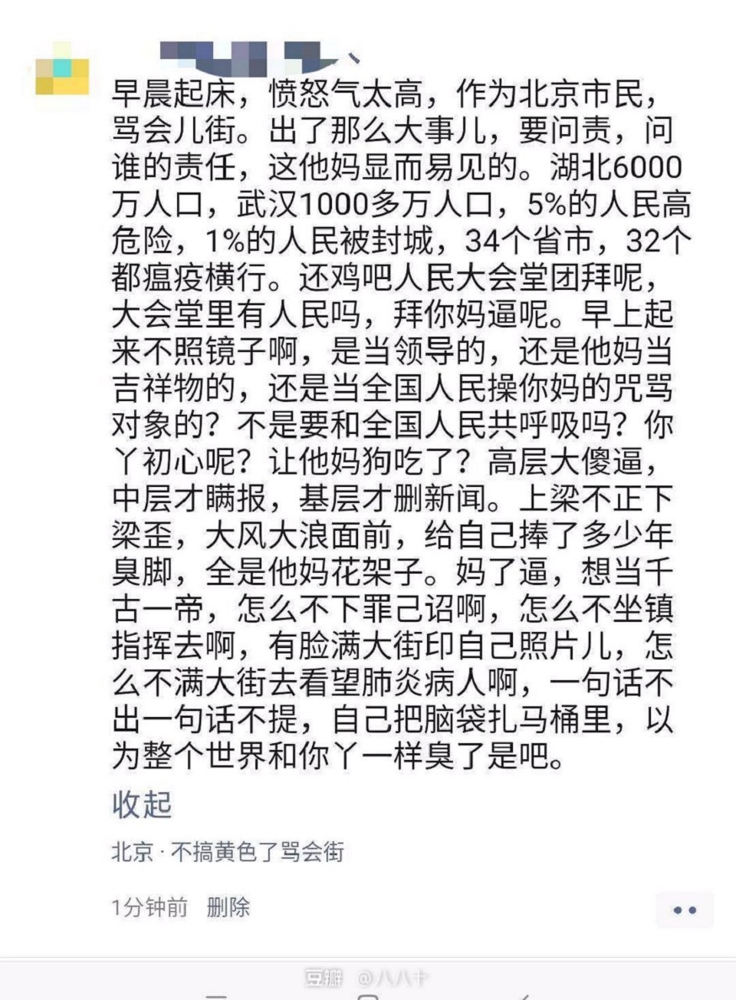
推荐阅读
特别需要强调的是，公众有权质疑、批驳任何报道乃至政府公告的真实性，公民发短信或者转发相关帖子，即使有不实之处，也应被视作自保或者行使监督权，政府部门只能用更加公开透明的信息来平息大家的忧虑，消除不实之言。一场灾难过后，人们尚未获知政府部门关于预警系统、抗灾能力和救援措施的检讨，却先发现普通市民因为参与灾难后果的讨论而被警方拘留，这不能不使网络民意的焦点集中在权力是否滥用、言论是否自由等问题上。
你的公信力就是这样慢慢消失殆尽，天天删帖封号喝茶抓人，不让人讲真话，搞到现在连自己都不好说话了。短短几天时间印证了那8名“造谣”者并没有造谣，也没有传谣，现在怎么解释？怎么回应这事件？真正造谣传谣的是你们这些恣意妄为的公权力机构！权力的傲慢与任性让民心皆失，你们不倒真的天理难容！
公司年会
晚上公司年会吃饭的时候，在抽奖环节我竟然意外地中了个三等奖，两百块钱的超市提货券。再加上元旦的时候发的300块钱的超市提货券。不过已经花的差不多了。
购物
晚上吃完饭就去超市买点当地的特产带回家。其实本来特别想买当地的柑橘，而且很便宜十块钱五斤，味道特别棒。比起我们去北方的橘子真的是不知道高到那里去了。在这里我最最喜欢吃的水果就是当地的芦柑，怎么来形容呢。味道虽然没有沙糖桔那样甜。味道不像北方的橘子用塑料袋包住。而且冬季北方的橘子都是放在冷库里保存的，从秋季放到冬季，味道怪怪的。和刚采摘下来的橘子味道极为不一样。而当地的芦柑，那味道真的很符合我的口味。在这座城市我已经呆了四年多了，早已经深深习惯上了这座城市。四年来吃当地的芦柑算一算少说也得有五六百斤了。的确你们看错，的确是五六百斤。尤其是在学校的时候，我每天都是水果不断的，从农历八月十五到腊月十五，这四个月，基本上每天都会吃芦柑或者橘子。因为我是一个素食者，自从素食以来就一直喜欢吃水果。但这次可惜这次没有买到芦柑，在超市买完年货回来后就收拾东西。
当地的芦柑
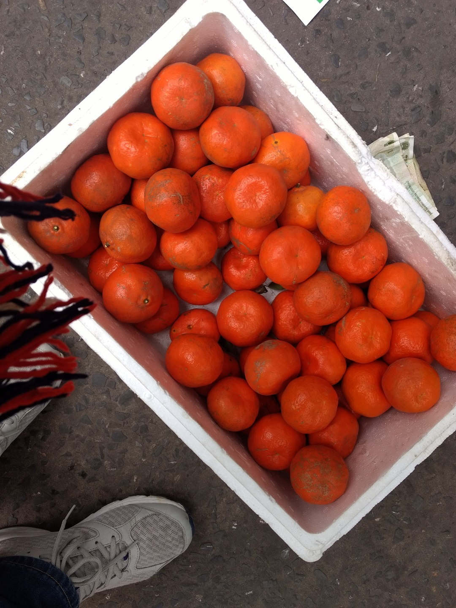
先把台式机的2 tb 的硬盘拆下来换到笔记本上，台式机实在带不走只能把硬盘拆下来了。年后准备买一块西数的HC310 7K6 7200 转 5TB 267M 缓存的机械盘。淘宝上的价格不到780还是能接受。而且读写速度非常棒，主要归因于7200转，比同等容量的5400转的硬盘不知道高到哪里去了。7200 转的能达到最高 260MB/S 平均 190MB/S，最低 110MB/S 的速度，而且还带西数官方的五年质保，300万无故障时间。4TB 7200 转的机械硬盘大多都是企业级的硬盘，稳定性和可靠性比普通 5400 转的硬盘要高很多，而且速度也比后者高约 50%。5400 转的机械盘平均速度也就 110MB/S 左右，而 7200 转的能达到 190MB/S ，最高 260MB/S 。所以买块HC310 7K6 还是比较值得的。
台式机上的硬盘拆下来换到笔记本之后，由于采用了 bitlocker 加密，需要密钥解密，无奈登录到 Microsoft 找到了恢复密钥，顺利解密。花完硬盘再接着测试了一下 esp8266 开关的运行状况。问稳妥妥地运行了三地个月没事儿。接着测试通过 curl 命令来控制 esp8266。由于使用的 http ，所以只好添加 iptables 规则仅仅允许 127.0.0.1 访问 esp8288 内网穿透过来的 frp 端口。这样就可以远程 ssh 到服务器通过 curl 命令行来开关台式机了😂再使用 ffmpeg 测试一下 rtsp 的监控视频流是否正常。
最后花了一个小时的时间把之前的文章《毕业后的一嗲思考》重新修改了一下。hexo 构建之后，定好明早上6点半的闹钟就钻被窝睡大觉喽。
《【旧文重写】毕业后的一些思考》https://t.co/j3kCeLaiWM
— 502.li (@muzi_ii) January 21, 2020
> 或许，在党国强大的机器下，无知和恐惧是可以养成的，信息和新闻是可能屏蔽的，现实和真相是可以被扭曲的。但亲身经历了，见证了，就不能假装无知，不能放弃记录，不能坐而待毙。黑暗无边，仅剩的一丝真实和亮光，绝对不能拱手相让。
大学四年的一日三餐基本上都是这样滴😂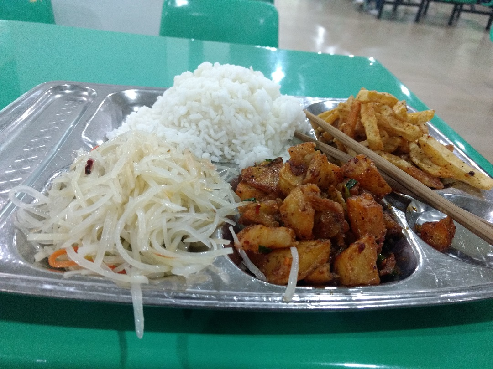
二十八
早上六点半起床去坐去火车站的公交，上了公交车赶紧找个位置坐下来，拿起 kindle 接着看《通往奴役之路》，之前断断续续看了一半，接着读到章节。看了二十几分钟就困了，早上起这么早真不习惯。而且还有点晕车。想吐的不得了，强忍了十几分钟终于到火车站了。
从工作城市到老家要至少24个小时的火车路程，实在是不好受。飞机票价格高出 1000 多，算了还是省省吧，坐飞机的话最多也就能节省 10个小时，而且都是晚上的又要等七八个小时。在火车上可以安安心心地躺着看书，实在是太爽了。
记得上大学的时候，每次回家坐火车都是坐硬座，没错，24 多个小时的硬座。无奈家境贫寒，学费的都是助学贷款😑。算下来，大学四年一共坐了16次24小时的硬座。我去，想想那时候还是个年轻小伙还能抗，现在实在是不想坐硬座了。既然自己已经能赚钱了就爱惜一下自己买个硬座吧，毕竟不再是以前那个穷逼学生了。以前回家的时候老姐会问我买的硬座还是硬卧，如果是硬座的话老姐就给我发红包让我改签成硬卧。大学四年的生活费也都是老姐给我的。
到了火车站，刚下车，晕车晕的太厉害了，差点没吐出来。在售货机那里买了三瓶八宝粥在路上吃吧，泡面什么的实在是没胃口吃了。说来也奇怪，以前是很少晕车的，即便是坐那种盘山公路的公交车也很少能晕车。自从去年公司开二十周年庆典的时候那次坐车后才晕车的。取票过安检上车，也没有等太长时间，等着时间接着看《通往奴役之路》。坐上火车，放好行李就躺铺上睡了一会儿，起这么早实在是有点困。平时我都是八点起床的，有时候睡懒觉就到八点半才起床，即便是八点半起床，走路几分钟就能到公司，住在公司附近实在是太方便了，有时候中午的时候还能回来睡一会儿午觉。
醒来后接着捧起 kindle 看起书来。看了几章《极权主义的起源》和《论国家的作用》。说实在的，内容实在是太枯燥了😂。还是换了本《地球脉动：前所未见的自然之美》。相比来讲，这个比较轻松有趣，因为很早之前就看过星球脉动的纪录片，所以对待书中写的内容也十分的熟悉，就这样一口气走马观花式地花了两个小时左右就看完了。看完之后接着又掏出手机看了两集《大国崛起》的纪录片，没想到看着看着就睡着了，手机一连着播放了三个小时，直到有人下站时才醒来。醒来之后肚子也有点饿了，于是就拿出买的八宝粥开始充饥。
吃饱喝足就像🐷一样接着躺尸在铺上看书。刷推特的时候看到推友分享《盗火者：中国教育体制改革调查》的观后感，才想起来之前自己也把这部纪录片下载了下来。但是文件都在笔记本上，掏出笔记本连接数据线拷贝到手机上。看了最后一集关于公民教育的。真的，长这么大二十四岁的人了，我还是第一次听说过在国内竟然有人在提倡公民教育。唉，吃尽教育体制苦头的自己，走出大学之后回头看，发现它基本上没有改善。一个缺乏独立之精神、自由之思想的应试教育，在党的意志取代国家意志的党化教育之下，只能培养出一颗颗国家机器的螺丝钉，而很难培养出一名独立人格和思想的合格公民。更不要提作为一名合格的公民利用宪法赋予的新闻自由、言论自由、集会自由、结社自由、出版自由等来监督问责政府违宪和滥权行为了。然而这部纪录片告诉我们，仍然有一些人在做出自己的努力，与行行色色畸形的教育做斗争，星火燎原。希望时间给出他们的报偿。这样所有的中国孩子都能活在一个更好的世界里。我们已经失去了自由于民主，我们也无法反抗当今的暴政，愧罪于后辈们。
推荐阅读
看完之后接着看了看关于公民教育的《爱弥尔》，又了解到卢梭的《社会契约论》。卢梭的思想指导了整个法国大革命，孟德斯鸠的思想知道了美国权力法案的制定。所以说提起卢梭不得不提起法国。
就想起了大国崛起里也有法国的纪录片，一是拿起手机又看了大国崛起关于法国的那集。
《社会契约论》的核心思想是：合法的国家必须根据普遍意志来进行管理。
想要读懂这本书还需要读卢梭的另外两篇论文，第一论文（《论艺术与科学》）和第二论文论人类不平等的起源和基础》，卢梭主要思考的是文明社会中种种罪恶与不幸，并解释它们的起源；那么，从《社会契约论》开始，卢梭则致力于思考如何改变这种状况。
按照第一论文和第二论文的分析，人本来是纯朴善良的，由于有缺陷的社会制度，生活于社会中的人才变坏，并堕入罪恶的深渊。由文明引发的问题必须通过新的政治组织形式来加以克服。《社会契约论》要做的工作是，通过建立一个健全的社会政治制度，帮助人们恢复自然良善。找到一种结合形式，凭借它可以运用所有共同的力量来捍卫和保护每个结合者的人身和财产，这种形式使得每个结合者虽然与所有人结合在一起，但是只服从自己，并且一如既往地自由。”这就是社会契约所要解决的根本性问题。社会契约可以简化为如下词句：我们中的每个人将其自身及其所有的力量共同置于普遍意志的最高领导之下，而将每个成员作为整体不可分割的部分纳入整体。在《爱弥儿》背后的一个基本预设是：没有文化做支撑，制度是没有办法有效运行的。因此，最重要的任务是：通过教育，将“人”转变为“公民”，像爱弥儿一样的公民。唯其如此，普遍意志才有可能，正义而合法的政治秩序才有可能。所依理解卢梭的思想，最好是从第一篇论文、第二篇论文、社会契约论、爱弥尔 这样的顺序读完。
论人类不平等的起源这本书在上周就早已经读完了，所依读起社会契约论速度比较快。一口气读完一半花了不到一个小时，这本来就是一本精简的小册子，读起来和《论人类不平等的起源和基础》一样，语言十分简洁精要。《爱弥尔》等到以后再度吧
二十九
火车晚点了一个小时，商务十一点半左右到县城的火车站。老姐早已经在外贸等候多时。没有从忙回家，先是回到我兄弟那里，正好给她呆了了一点特产。历时30个小时到家，中午到家已经十二点半了，大外甥也在家，比起以前又长高了，现在我也听话了😂。刚上一年级，也是个话痨，话特别多，也不调皮捣蛋，总是问老师这问题那问题的，话超级多。好几次被叫家长了，有次课上提问问题太多被老师停课半天，真是辛苦了我老姐啊，三番五次叫家长。
到家收拾了一下房间，晚上家里吃火锅。晚上吃饭玩才七点多，也没事儿干就早早地钻到被窝里了。打开笔记本，ssh 远程登录到远在千里之外的路由器，通过一个 curl 命令打开了远在千里之外的台式机。家里移动的网络，不知道为什么梯子的速度明显比电信的要慢很多很多😫。刷推、push GitHub commit 等操作不得不远程使用千里之外的台式机了，那里电信的网络稍微好一点。再次诅咒 GFW 去你妈的早点倒闭吧。
睡觉前补了一集末日三问，酸死我了。实在是太喜欢珂朵莉啦，准备年后打印几张海报帖子在床头的墙上😋
- 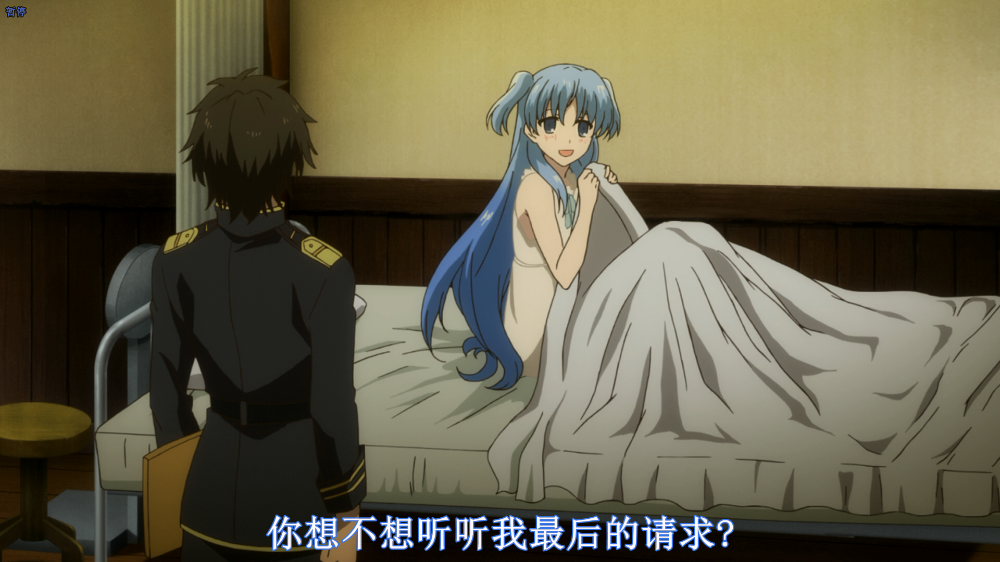
- 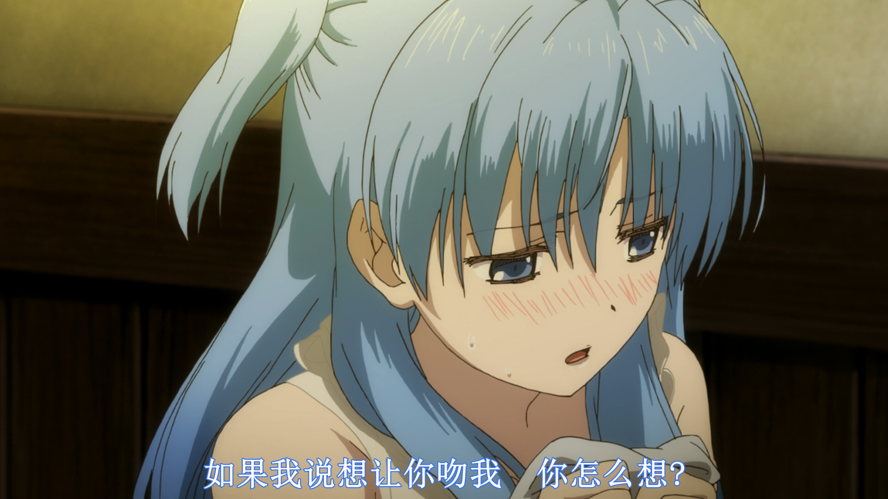
- 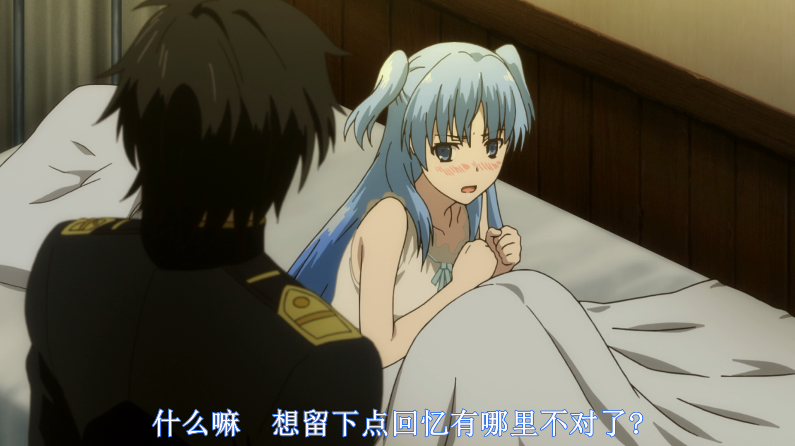
我也想和别人有一些感情不仅仅是男女之间的感情，而是通过博客的文字和思想和别人产生一点共鸣，毕竟我也是在GFW成长下的一代，身边的人能交流的少之甚少。在博客上遇到很多好朋友，尤其是蝉时雨在博客上留下了十条评论😂。能遇到这么一些小伙伴，就像柯朵莉那样，在自己小时之后从别人心中留下一点记忆吧。
引用某为推友在我推特上的评论吧
自从自由的访问互联网以后，有一点感同身受，看这篇文章，看得有点想哭
三十
上午清理一下院子，把门前的垃圾清扫一下，因自来水管管道填埋的土，也情理得干干净净。免得年后这几天下雨或下雪导致门前一堆堆的泥糊。上午收拾完院子，中午吃罢饭就去超市买点年货。买了番茄味的火锅底料，这个味道还从未尝试过。改天家里吃火锅试一下。又去五金店花了100块钱买了4个LED灯，卧室里的灯早就该换了，之前一直使用的十几瓦的节能灯，光线特别暗。换上之后比值钱的不知道高到哪里去了，瞬间高大上起来了。
下午家里包水饺，老妈活面，包，老爸调馅儿，老姐压剂子。而我负责吃水饺和送水饺。🤣下午还要去家族的墓地请先人们回家过年。按照往常应该是带上鞭炮去的。但今年全县都禁止燃放烟花爆竹。逮到就是罚款五百元。而且也很难买到烟花爆竹了。所以只带了香火也金叶子去的。这几年一直都是我来请先人们回家过年的。主要有我爷爷奶奶，父亲的爷爷，还有爷爷的爷爷。
每到这时总能想起祖辈们。爷爷是当时县里最有名的知识分子，可以在文革的时候被批斗，眼睛被整瞎了，腿也瘸了。父亲的爷爷在文革批斗的时候被整死了。爷爷的爷爷在文革批斗的时候被气死了。唉，祖辈三代在文革的时候被批斗征得家破人亡，家族财产被抢去，这也是导致我们家族沦落为贫农的原因吧。文革之前我们家族还算比较富有的。文革过后，家族穷的吃不起饭，洪灾的时候又流离失所，八九十年代的时候又举家到山西逃难，从爸妈结婚到我出生的时候，我们家因逃难搬家无数次，颠沛流离地生活并没有击垮父母，直到家里有了我之后才回到老家定居下来至今。唉。每每想到此，心中无数想说的话想对祖辈们说。想起父亲在二十出头时就已经扛起整个家族的重担…..每每想到与此。虽然听了无数鸡汤励志故事，但我最敬佩的人只有我父母。
扯得有点远了
请先人们回家过年，在坟前各插三根香火点燃，剩余的香火点燃带回家，用香火引领先人们从阴间到家里。听起来很迷信，但这样的传统我始终认为是有价值和意义的。尤其是在2017年的时候和前女友一起看完《寻梦环游记》之后。和墨西哥的亡灵节一样，唯有后人将家族的先人们铭记于心在能使先人们的灵魂在阴间得以存在。大概也是如此吧，一个人正真死去的时候，并非是肉体上的死亡，而是消失在人的记忆之中。而这种请先人们回家过年的迷信传统也和墨西哥的亡灵节有着共同之处吧。将历代家族的意志和历史传承给每一代人，才能使家族延续至今。拿着点燃的香火到家，插在堂屋的主干前的香炉上，对着印有家族图谱的主干毕恭毕敬地磕上四个响头。将对爷爷奶奶的思念传递给他们，愿他们在天国安好。
水饺也包完了，接下来就是下水饺。我们家依旧使用的是木柴，也就是带有炕的那种。以前上初中和小学的时候我和弟弟就睡在炕上，贼暖和。基本上现在我们村家家户户都烧柴火。水开之后水饺下到锅里，等着水再次开之后再放凉水，连续三次开就可以。另外因为家里只有我一个人素食，所以就单独给我包里韭菜鸡蛋馅的水饺，还要单独给我下水饺😂。恐怕全村也只有我们一家包两种馅的水饺吧。水饺熟了之后盛在碗里，这时还不能吃。要先供养老天爷和先人们。还是有讲究的，先在老天爷香炉旁边放一碗水饺，再说一句“老天爷，过年吃扁食咧”，接着再放到财神爷那里一碗水饺，接着再放到主干那里一碗水饺，最后再放在土灶神那里一碗水饺。土灶神还是比较特殊的，土灶神是在人间的神，到腊月十八的时候要送他上天给玉皇大帝汇报当年人间的情况。
就这样供养完这些神之后就可以吃水饺了，吃完水饺还要去给我大爷家送一碗水饺，这也算是一种习俗。等到初一那天早上也要去送一碗水饺。其实这算是我帮我我儿子送的水饺，虽然现在我还没有对象 ：( 。因为送水饺都是孙子辈给爷爷辈送水饺。😂
突然想到了昨天老妈还催我赶紧找对象结婚生孩子抱娃儿三连。并且有一个亲戚还给我说了对象😐。我实在是不想谈恋爱，因为大三的时候谈过一次初恋，后来分手后悲痛不已，做出了很多傻事儿，(难受得不行自己独自一人跑到学校后山上一口闷了半斤多的白酒，而且还是空腹饮酒，导致酒精中毒差点没窒息挂掉)。从那以后我明白了，我是无法忍受失去的滋味。那么假如失去如此痛苦我宁愿不曾拥有，所以我就不再敢谈恋爱了，都一把年纪了，早已看淡生死，只要自己一个人过得开心就好。没有女朋友又能怎样，又不是不能过日子。我现在已经把书籍当作自己快乐的唯一源泉，因为我不会失去他们，只要我阅读和思考他们就永远不会失去它们。将自己的幸福和快乐寄托在他人身上是如此地脆弱，我已经深深体会到失去它的痛苦，所以就不再想失去第二次了。这也算是我对自己自我防护机制吧。没有希望就没有失望。自己读书看漫画追番和博客读者们交流收获的快乐又是多么地单纯，没人会背叛自己，没人会伤害自己，没人会离自己而去。这个世界上没有必须要得到的东西，也没有不能无法失去的东西，抱着这种心态来对待自己的期待和欲望，这样才能使自己过得开心一点。
高中的时候喜欢上一个女生，一直喜欢到和初恋分手之后的大彻大悟。五年的时间一无所获，收获的仅仅是一次次的失望，一次次地期待被破灭。也是自从和初恋分手之后我也释怀了，也不觉着有多么地喜欢那个女生了，也能以平常心看待之间的关系了。晚上，家族年夜饭，只去了我们三个人，今年真是意外地少啊。喝了一瓶啤酒到九点多
睡觉前拿起 kindle 接着看卢梭的《社会契约论》。把kindle 的笔记导出来更新一下标记然后就 push 到 GitHub 上就早早地睡了。
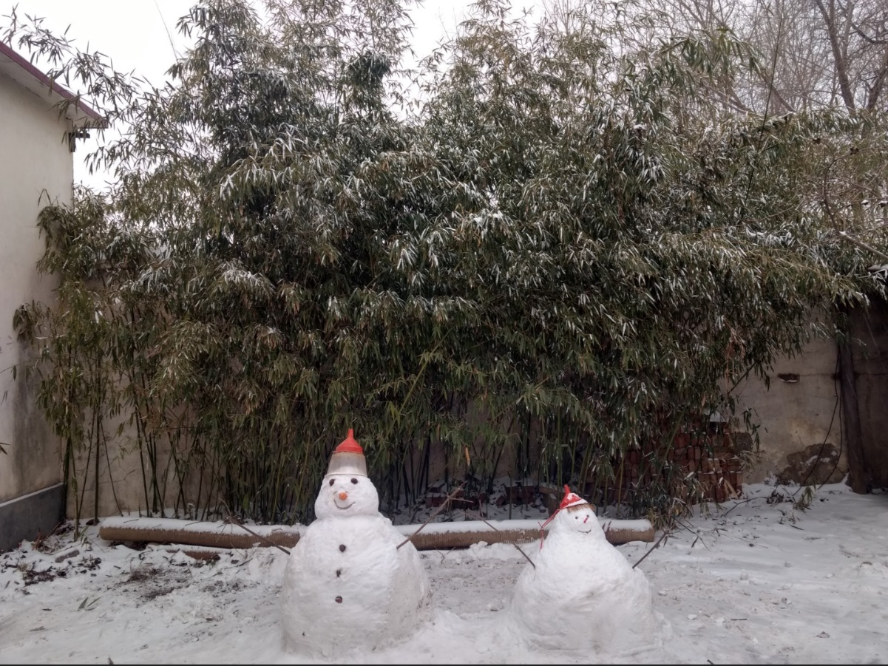
初一
初一早上六点起床，洗脸吃饭后在主干前磕四个响头。接着就再给大爷家送水饺。回来这后等着几个堂哥一起去给村里的长辈们拜年。
拜完年回来后就钻被窝里暖和暖和，外面实在是有点冷。等到九点多就和老爸还有堂哥一块去走亲戚。亲戚家就在我高中学校的家属院，谈了谈家常，又谈起了我初中的时和老师干架的黑历史😐。黑历史绝对的黑历史。有谈了谈我既然工作安顿下来了，接下来就该谈对象结婚成家三连了。我哭了，再次催婚😣。
想到了蝉时雨博客上的一段话
不知觉在异国的生活已近一月，异国风情尚未深刻感受。每天两点一线，几分钟的路程，不用在思虑三餐和忍受早晚高峰挤地铁的煎熬，怕是最为惬意的事情，每天有更多的时间来思考充实自己。
自己的生活也是如此，自己一个人住在公司附近，三四分钟的路程，中午的时候回来睡个午觉。下午下班后在附近吃完饭回来就宅在屋里。没人打扰，微信和家人保持联系，其他 IM 上也很少和人联系(我的微信和QQ使用的都十年了，但好友始终未超过110个，所以即便时我的QQ一个月不登录也没几个人搭理我🙄)。下班后就捧着 kindle 看书看漫画追番，学英语，做项目。自己一个人和生活真的是很充实。我也希望能永远这样下去，虽然住着筒子楼，拿着微薄的工资，每天955工作制，自己拥有的个人时间实在是太多了。我不想被打扰，我也不喜欢将时间浪费在无意义的谈情说爱上。
中午留在亲戚家吃饭，下午两三点就回家了。本来没打算留下来吃饭的，但太好客了，加上聊天意犹未尽就接着扯了😂
下午到家后就钻被窝里喽，晚上吃饭的时候听说我们这边这几天要封村了。因为武汉肺炎，我们这边动静很大，村里的喇叭上也广播着不让外出的消息了，初二就开始把村口的路都堵上了。走亲戚的都取消了。
既然出不去，家里就商量着搓麻将😂，正我和老爸老妈老姐四个人。搓完麻将就早早地钻被窝里睡觉啦。
十年前的黑历史
梦回十年前，年少无知的初中时代，也就是 2010 年。那时候还是因为厌学辍学，讨厌学校。记得上小学的时候还是个老老实实的乖宝宝，但自从上了初中之后，加上正值叛逆青春期。于是刚上初中后就开始和一群街上的小流氓鬼混。想想那时的自己还是个吸烟喝酒、打架斗殴、欺凌弱小、上课捣乱、通宵上网、夜不归宿的小流氓。和父母吵架，和老师干架，和同学打架，那几年伤害了很多人，悔恨至今。
也就是 2010 年是人生中个转折点吧，那时候因为厌学又转到了另一个学校（其实我初中四年换了四个学校）。刚刚过完年开学的第一天晚上晚自习。上课玩手机听歌被班主任逮到。那还了得，班主任二话不说让我把手机交出来，不知道当初哪来的勇气，站起来立马怼了回去。“不交咋滴！”。然后班主任和我抢手机，我也怒了，一巴掌掌掴在她脸上。那声音在晚上安安静静的教室里格外响亮。然后班主任就哭着去了办公室，我也就被教导处主任叫去了政教处。第二天，开除学籍，卷铺盖走人，而这所学校，我仅仅呆了不到一个月。这也是初中四年呆的最短的一个学校。
被学校开除后，第二天也没在家歇着。家里人商量着既然不想上学，那就去工地上打工吧，感受一下打工的辛苦。于是第二天早上，老爸把我送到去省会城市的客车上。那时候才十五岁，只身一人来到一个陌生的城市，开始打工漂泊。依稀记得在坐车的时候，手机也丢了。以至于一个多月都没和家人联系。在工地上搬砖打工的日子，那种感受到现在依然历历在目，机械式的重复工作，在泥土坑道里拿着机器穿来穿去，扛着一百多斤重的发电机在狭窄的沟子里。全年无休，更不要提 996 了。
初二
今天一直宅在家里了，上午睡懒觉到十点多，真是爽啊。今天一整天都没做什么事儿，吃床吃完饭后就钻被窝里躺着了，一会儿就睡着了。下午没事儿翻了翻相册，找到几张有趣的图片。
- 在学校自习教室里的狗子
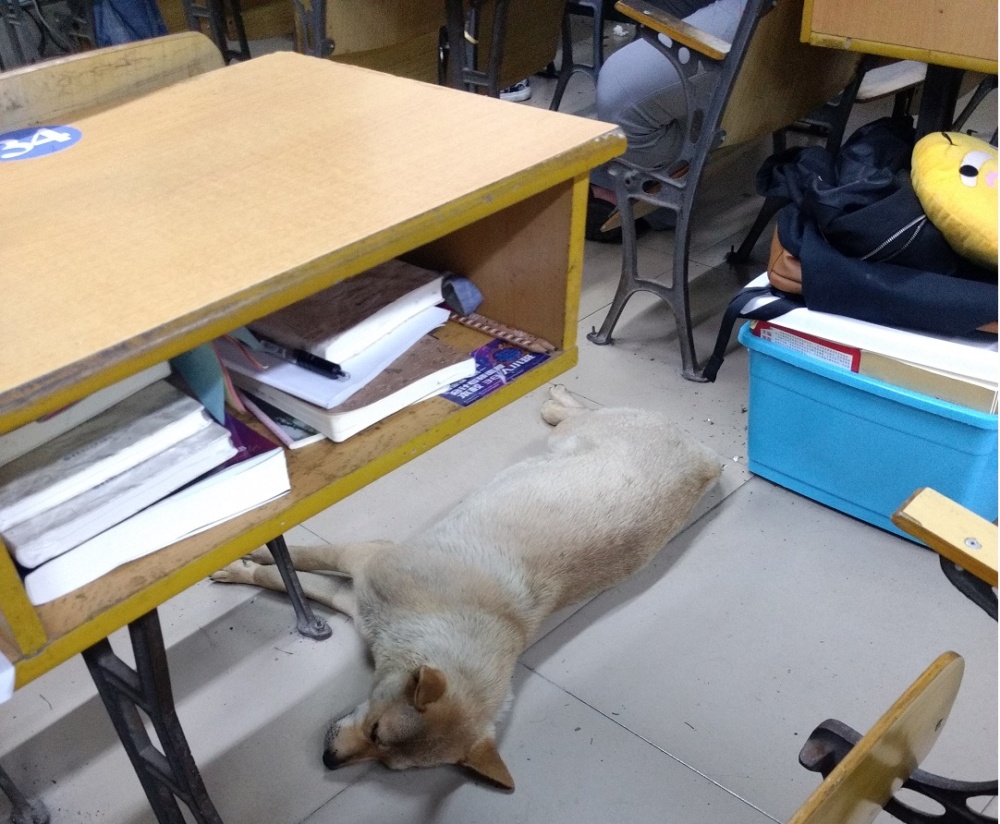
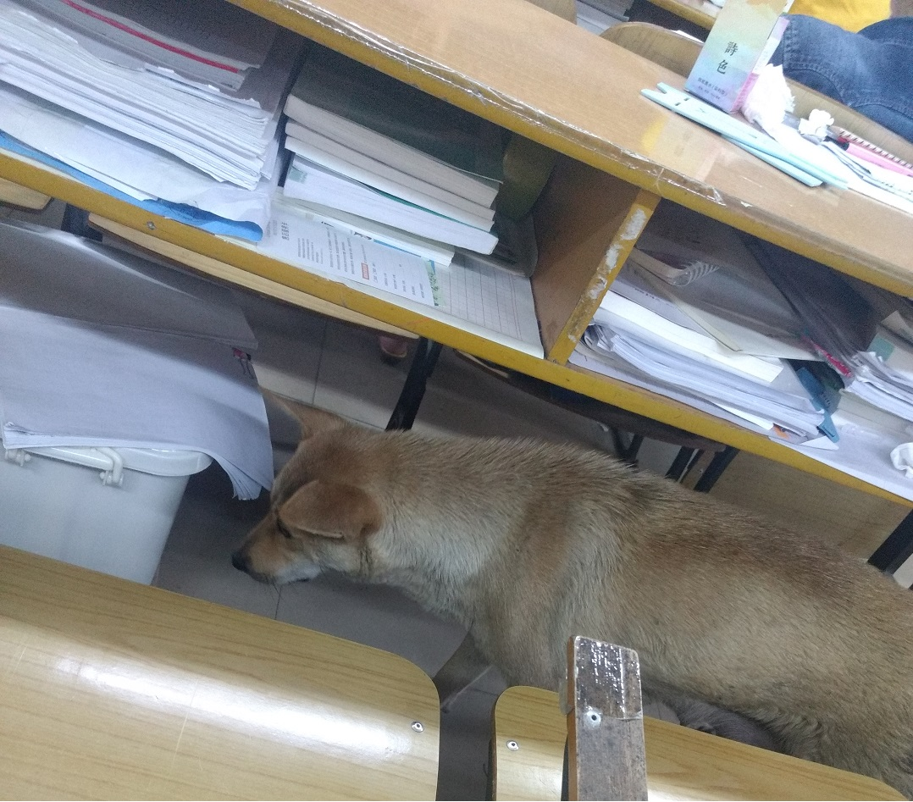
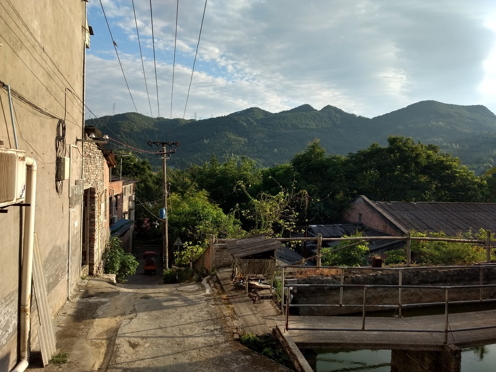
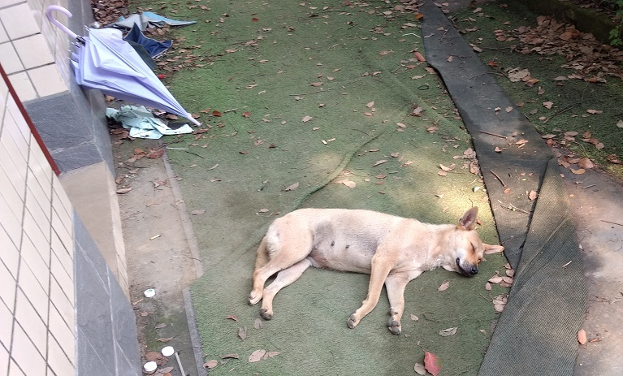
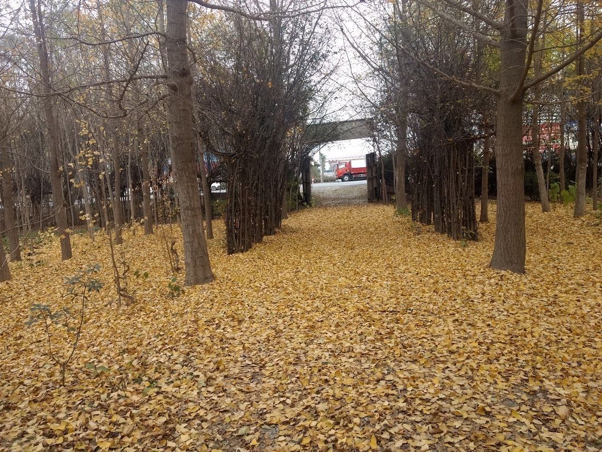
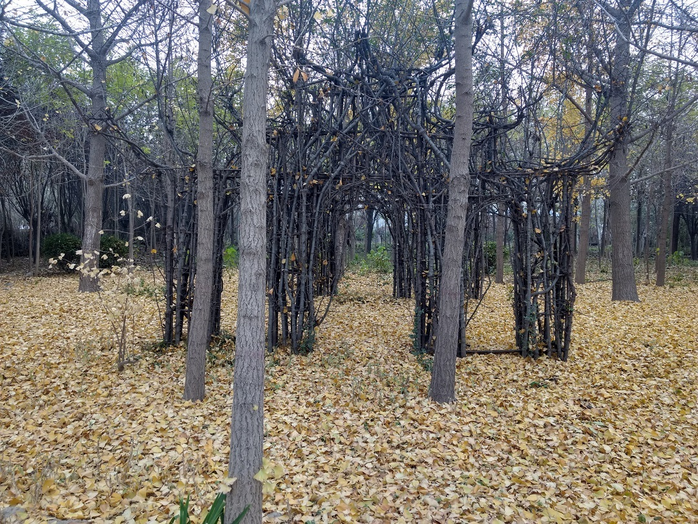